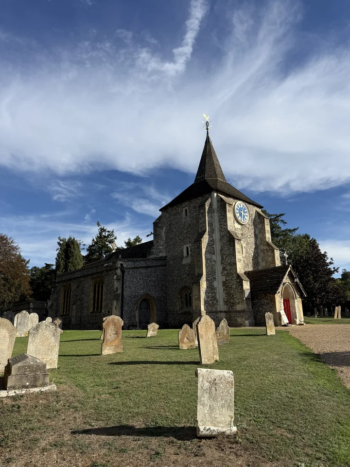

By car
For Mickleham church, use Old London Road, RH5 6DU. For Westhumble Chapel, use Crabtree Lane, RH5 6BG. Choose the directions button for your destination.
Driving directions to Mickleham (opens in a new tab)Visit & Learn
Find St Michael and All Angels in Mickleham and the Chapel of Ease in Westhumble. Two places of welcome in the Surrey Hills.
Whether you’re joining us for worship or visiting for the first time, we look forward to welcoming you.

Two places, one parish
Our church and chapel are separate destinations. Check the church calendar for the location of your service or event.

01 / Mickleham
Use Old London Road and postcode RH5 6DU when planning your arrival. The 465 serves the Mickleham Church stop; check the current route and arrivals below.
Explore the church →
02 / Westhumble
Use Crabtree Lane and postcode RH5 6BG. Check the calendar for chapel services and contact the parish to confirm access before making a special journey.
Explore the chapel →Plan your journey
By public transport: the 465 bus serves Mickleham Church and Westhumble Street. Box Hill & Westhumble is the local railway station. Plan your onward journey to the church or chapel.
For Mickleham church, use Old London Road, RH5 6DU. For Westhumble Chapel, use Crabtree Lane, RH5 6BG. Choose the directions button for your destination.
Driving directions to Mickleham (opens in a new tab)Please contact the parish to confirm parking arrangements at your destination before your visit, including any disabled parking requirements.
Ask the parish →The 465 links Kingston, Surbiton, Leatherhead and Dorking, serving Mickleham Church and Westhumble Street. For the chapel, check your onward route from Westhumble Street.
465 route & arrivals — TfL (opens in a new tab)Box Hill & Westhumble station is on Westhumble Street, Westhumble, RH5 6BT. Plan a separate onward journey to the church or chapel.
Station & journeys — National Rail (opens in a new tab)Plan your route from the station to your chosen destination. Check the route suits your needs; contact the parish if you need local arrival advice.
Plan a walk to Westhumble Chapel (opens in a new tab)For step-free access, entrances or facilities at either building, please contact the parish to confirm arrangements that meet your needs.
Ask the parish →Check current services and your onward route before setting out.
Around the parish
Open a map for the church, chapel or railway station, then choose the route that suits your journey.
We’re happy to help
If you’re unsure which building to visit, or need to discuss parking, access or arrival arrangements, please get in touch before your visit.